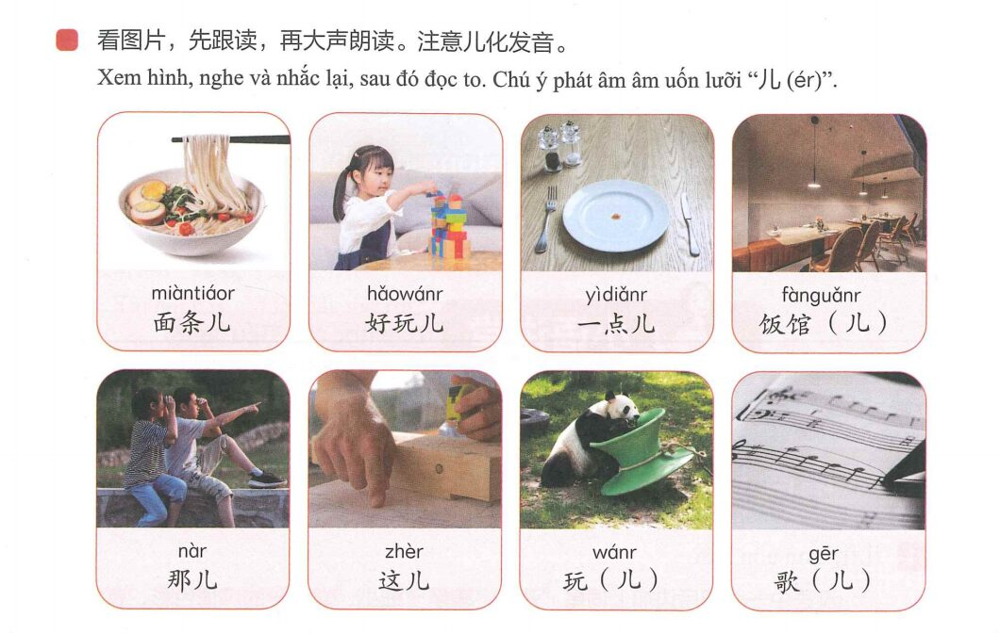
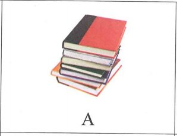
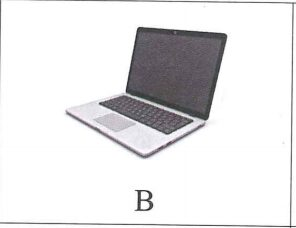
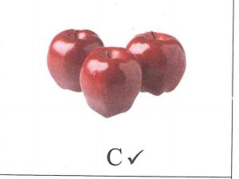

你的手机号是多少？
Số điện thoại di động của bạn là bao nhiêu?
一、Ngữ âm
1. 儿化 – Âm uốn lưỡi
Trong tiếng Trung Quốc, một số từ khi thêm hậu tố “儿 (ér)” ở phía sau sẽ mang sắc thái thân mật, biểu thị ý nghĩa “nhỏ bé” hoặc “yêu thích”. Trong một số trường hợp, việc thêm “儿” có thể làm thay đổi ý nghĩa và từ loại của từ. Có từ thêm trực tiếp “儿” và thêm “r” sau phiên âm gốc; cũng có từ không viết “儿” nhưng theo thói quen văn nói vẫn được phát âm uốn lưỡi.
🔊 Bảng âm uốn lưỡi
| Từ gốc | Từ loại | Âm uốn lưỡi | Từ loại |
|---|---|---|---|
| 这 zhè | đại từ | 这儿 zhèr | đại từ |
| 哪 nǎ | đại từ | 哪儿 nǎr | đại từ |
| 画 huà | động từ | 画儿 huàr | danh từ |
| 盖 gài | động từ | 盖儿 gàir | danh từ |
| 个 gè | lượng từ | 个儿 gèr | danh từ |
| 眼 yǎn | danh từ | 眼儿 yǎnr | danh từ |
Xem hình, nghe và nhắc lại
🔊 Từ có âm uốn lưỡi

2. Quy tắc viết phiên âm – dấu cách âm
Khi âm tiết bắt đầu bằng “a, o, e” nối liền với âm tiết phía trước, để tránh ranh giới giữa các âm tiết không rõ ràng, cần dùng dấu cách âm (’) ở giữa hai âm tiết. Ví dụ: shí’èr (十二), Xī’ān (西安), Tiān’ān Mén (天安门).
二、听读练 · Nghe, đọc và luyện tập
1. 听录音，选择听到的双音节并大声朗读。
🔊 Chọn từ hai âm tiết nghe được
2. 听录音，分辨儿化与非儿化发音的不同，再跟读、朗读。
🔊 Phân biệt có/không có 儿化
nǎ nǎr
cí cír
huàr huà
yí kuàir yí kuài
jiāyóu jiāyóur
chàng gēr chàng gē
三、听力 · Phần nghe
🔊 File nghe hoàn chỉnh · Câu 1–10
Phần 1 · Câu 1–3
听短语，选择正确图片。每题听两次。
Ví dụ theo sách: 三个苹果 → C



Phần 2 · Câu 4–5
听问题，选择正确回答。每题听两次。
A.
Phần 3 · Câu 6–8
听对话，选择最匹配的图片。每题听两次。
Phần 4 · Câu 9–10
听句子和问题，选择正确答案。每题听两次。
四、阅读 · Phần đọc
Phần 1 · Câu 11–13
选择与句子最匹配的图片。
Phần 2 · Câu 14–16
匹配句子。
A. 坐出租车。 B. 真好看！ C. 包子。 D. 好的，谢谢！
Phần 3 · Câu 17–18
选词填空。
A. 有 B. 牛奶 C. 名字
Phần 4 · Câu 19–20
选择正确答案。